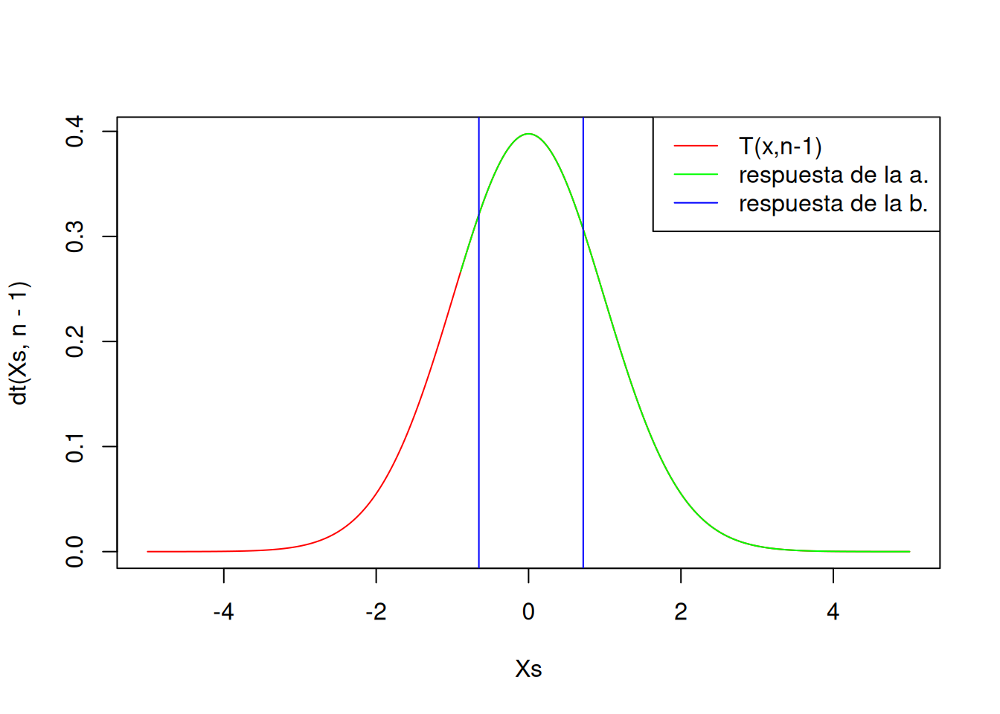
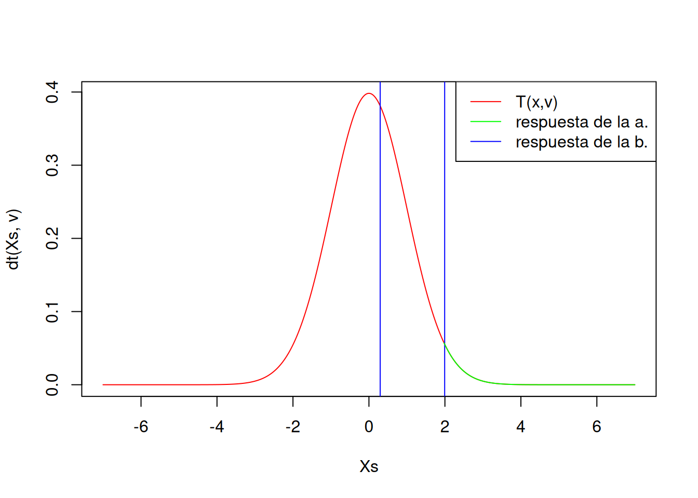
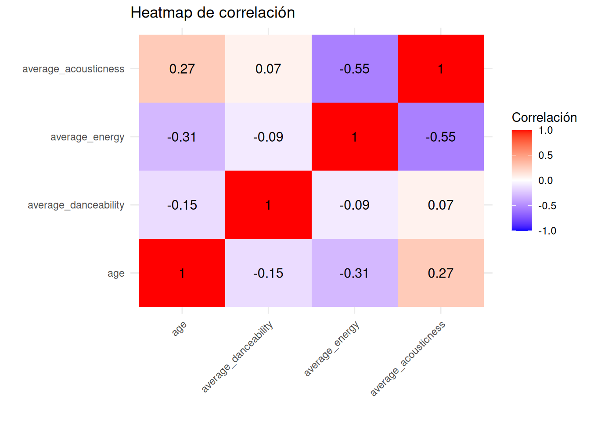
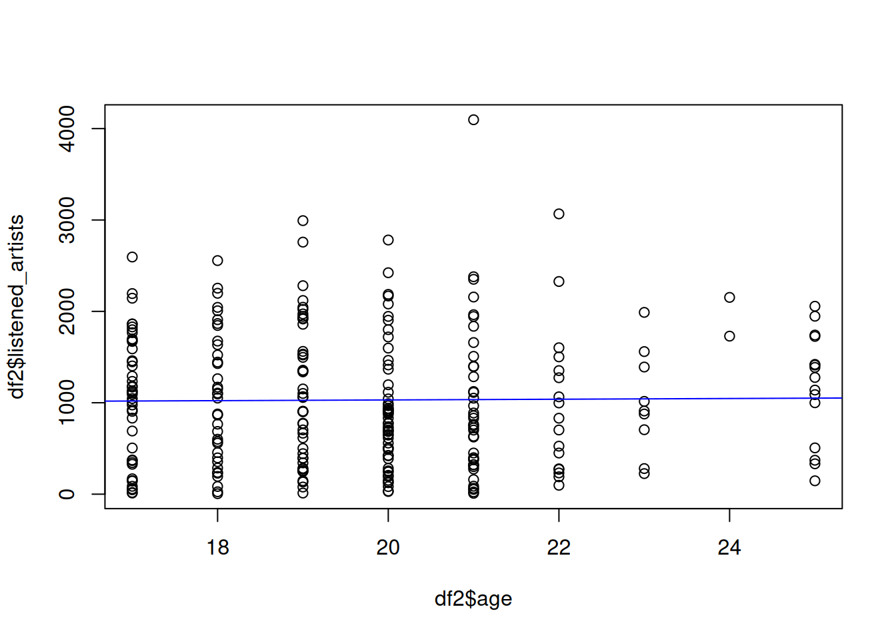

librerias <- c("dplyr", "ggplot2", "reshape2", "readr", "randtests", "tidyverse", "lmtest", "purrr", "nortest")
for (paquete in librerias) {
if (!require(paquete, character.only = TRUE)) {
install.packages(paquete, dependencies = TRUE)
}
library(paquete, character.only = TRUE)
}Proyecto-Spotify
Preferencia musical de los estudiantes universitarios de Lima según datos de Spotify
Proyecto realizado para el curso de Estadística y Probabilidades II: @Utec
Relevancia
Aplicaciones de datos en IA: El uso de Inteligencia Artificial (IA) en Spotify incluye el reconocimiento de emociones en canciones, lo que sirve para mejorar listas de reproducción personalizadas y la experiencia general del usuario. Al analizar elementos como el tono, el tempo y la letra de una canción, Spotify puede determinar el estado de ánimo que transmite y sugerir música que se alinee con las emociones o el estado mental del usuario. Por ejemplo, si un usuario tiende a escuchar canciones tranquilas y melódicas por la noche, Spotify puede identificar esta tendencia y recomendar canciones similares durante ese momento del día. Además, Spotify utiliza algoritmos de aprendizaje automático en su sistema de recomendación. Estos algoritmos consideran factores como la popularidad de la canción, las tendencias musicales actuales y lo que están escuchando los usuarios con gustos similares. Esto permite a Spotify ofrecer recomendaciones altamente personalizadas.
Aplicaciones de datos en marketing: ¿Cómo contribuye el análisis estadístico de datos musicales al marketing actual? La música es parte de la vida diaria de las personas y las empresas están interesadas en satisfacer las necesidades principales de sus usuarios. Considerando a Spotify como una de las aplicaciones de música más conocidas hoy en día, la recolección de sus datos presenta una fuente interesante de información para el marketing de la empresa, especialmente porque son datos públicos. Las empresas a menudo utilizan datos de Spotify para centrarse en analizar los comportamientos y preferencias de los usuarios con el fin de crear estrategias más efectivas. Esto podría incluir segmentación de audiencia y personalización de mensajes publicitarios, colaboraciones con músicos populares (o en tendencia), o análisis probabilístico tanto de tendencias actuales como futuras.
Objetivos
Este es un estudio que recopila datos de múltiples estudiantes universitarios de Lima con el objetivo de encontrar patrones en sus preferencias musicales. Realizaremos casos de estudio donde investigaremos
- Estudio de la variable ‘danceability’, variable cuantitativa continua que mide qué tan bailable es una canción.
- Relación entre la ‘danceability’ y la edad.
- Hipótesis: La ‘danceability’ promedio de las canciones escuchadas es mayor al 50% en personas entre las edades de 15 y 25 años.
- ¿Cómo ha evolucionado la intensidad promedio de
Obtención de datos
Cada entrada en el conjunto de datos corresponderá al ID de usuario de un estudiante y tendrá como valor una lista de artistas que escuchan, el número de veces que los escuchan, entre otros. Los datos se obtendrán de la API de Spotify, con el siguiente código (simplificado):
# Authorize and Authenticate
# ...
from spotipy import Spoify
top_artists: Const = spotify.current_user_top_artists()
top_tracks: Const = spotify.current_user_top_tracks()
listened_artists: Spotify.Artist[] = []
# Extra data
for track in top_tracks["items"]:
features = spotify.audio_features(track["id"])
analysis = spotify.audio_analysis(track["id"])
listened_artists.merge(track["artists"]['items'])Para obtener los IDs de usuario y los datos, necesitaremos crear un sistema de autenticación que nos permita obtener los datos de las personas. Además, tendremos un canal de datos que extraerá información relevante de la API de Spotify y la almacenará en Google Sheets, que luego se podrá exportar a un CSV y finalmente a un dataframe de R.
Integrantes
 Arturo Magno |
 Valentin Quezada |
 Enrique Flores |
Variables utilizadas en el estudio
Este estudio requiere que los usuarios proporcionen sus datos de Spotify, lo cual podría ser un problema para algunas personas. Necesitaremos asegurarnos de que los datos estén anonimizados y que los usuarios estén al tanto de qué datos estamos recopilando y cómo los estamos utilizando. Teniendo todo esto en cuenta, esperamos que una aplicación web atractiva nos ayude a obtener una buena cantidad de datos. En cuanto al público objetivo, esperamos obtener una buena cantidad de datos de los estudiantes de UTEC, así como de otras universidades en Lima, especialmente si consideramos que casi todos los estudiantes universitarios utilizan Spotify.
La cantidad mínima de datos que necesitamos son 200 entradas, pero para un estudio más robusto, necesitaríamos al menos 500 entradas. En el peor de los casos, los datos serán principalmente de UTEC, lo que generará sesgo en el primer objetivo. No obstante, intearemos recopilar la mayor cantidad de data posible, variada en su mayoría.
Variables primarias
| Variable | Tipo | Restricciones |
|---|---|---|
| Centro de estudio | Nominal categórica | Ninguna |
| Edad | Cuantitativa discreta | ~ [15, 40] |
| Distrito | Nominal categórica | Distritos de Lima, Perú |
| Variedad musical percibida | Nominal ordinal | {Ninguna (1), Baja (2), Media (3), Alta (4), Muy alta (5)} |
| Géneros preferidos percibidos | Nominal categórica | Géneros musicales de Spotify |
Variables secundarias
| Variable | Tipo | Restricciones |
|---|---|---|
| ‘Danceability’ promedio de canciones favoritas | Numérica continua | [0, 1] |
| Característica acústica promedio de canciones favoritas | Numérica continua | [0, 1] |
| Nivel de energía promedio de canciones favoritas | Numérica continua | [0, 1] |
| Intensidad de volumen promedio de canciones favoritas | Numérica continua | [-60, 0] DB |
| Artistas escuchados por año | Numérica continua | \(\mathbb{R}^+\) |
DF <- read_csv("spotify_data.csv")Rows: 260 Columns: 11
── Column specification ────────────────────────────────────────────────────────
Delimiter: ","
chr (5): favourite_gender, spotify_id, percieved_variety, study_center, dist...
dbl (6): average_danceability, average_energy, average_loudness, average_aco...
ℹ Use `spec()` to retrieve the full column specification for this data.
ℹ Specify the column types or set `show_col_types = FALSE` to quiet this message.head(DF)# A tibble: 6 × 11
favourite_gender average_danceability average_energy average_loudness
<chr> <dbl> <dbl> <dbl>
1 rock 0.682 0.401 -10.1
2 rock 0.303 0.88 -4.74
3 r&b 0.845 0.652 -7.50
4 r&b 0.425 0.378 -5.82
5 pop 0.76 0.887 -1.99
6 r&b 0.496 0.639 -6.16
# ℹ 7 more variables: average_acousticness <dbl>, spotify_id <chr>, age <dbl>,
# percieved_variety <chr>, listened_artists <dbl>, study_center <chr>,
# distrito <chr>variable_name <- names(DF)Caso de Estudio #1
Distribución de la media muestral de ‘danceability’ para los encuestados entre 15 a 18 años.
El objetivo del primer caso de estudio es evaluar la variable ‘danceability’ en encuestados entre las edades de 15 y 18 años. Tenemos como dato la media de la población, \(\mu\), que podemos calcular usando RStudio. Luego, filtramos la base de datos para los encuestados que tienen entre 15 y 18 años. Esta será nuestra muestra, y entonces buscamos su tamaño (n) y la desviación muestral (s).
mu = mean(DF$average_danceability)
DFD <- filter(DF,age >= 15 & age <= 18)
n = sum(complete.cases(DFD))
s = sd(DFD$average_danceability)
paste("mu =", mu)[1] "mu = 0.664669230769231"paste("n =", n)[1] "n = 79"paste("s =", s)[1] "s = 0.146037375225229"Entendemos para este caso que, como el tamaño de muestra es menor a 30, la media muestral se distribuye con una T-student de \(n-1\) grados de libertad. Con esta información, podemos ahora resolver los siguientes incisos:
a. ¿Cuál es la probabilidad de que la media muestral sea mayor a 0.65?
\[P(\overline{x}>0.65)\]
\[P\left(\frac{\overline{x}-\mu}{\frac{s}{\sqrt{n}}} > \frac{0.65-\mu}{\frac{s}{\sqrt{n}}}\right)\]
\[P\left(T(n-1)>\frac{0.65-\mu}{\frac{s}{\sqrt{n}}}\right)\]
a <- (0.65 - mu)/(s/sqrt(n))
paste("La probabilidad de que la media muestral sea mayor a 0.65 es", pt(a,n-1, lower.tail = FALSE),".")[1] "La probabilidad de que la media muestral sea mayor a 0.65 es 0.812646209374997 ."b. ¿Será posible determinar un intervalo de confianza para la media muestral? Consideremos un nivel de confianza del 95%.
nc = 0.95
alpha = 1 - nc
test <- t.test(DFD$average_danceability, conf.level = nc)paste("El intervalo de confianza para la media poblacional es [", test$conf.int[1], ";", test$conf.int[2], "] con un nivel de confianza del 95%.")[1] "El intervalo de confianza para la media poblacional es [ 0.651859030593054 ; 0.717280209913276 ] con un nivel de confianza del 95%."Xs <- seq(-5, 5, by = 0.001)
plot(Xs, dt(Xs,n-1), type = "l", col = "red")
lines(Xs[Xs > a], dt(Xs[Xs > a],n-1), col = "green")
abline(v = c(-test$conf.int[1], test$conf.int[2]), col = "blue")
legend("topright", legend = c("T(x,n-1)", "respuesta de la a.", "respuesta de la b."), col = c("red", "green","blue"), lty = 1)
Caso de estudio #2
Distribución de la varianza muestral de la variedad musical de los encuestados.
El objetivo del segundo caso de estudio es evaluar la variable ‘perceived_variety’. No obstante, nos falta como dato la varianza de la población, \(\sigma^2\), para poder trabajar el caso. Nuestra base de datos entera servirá en este caso como muestra, y al ser de un tamaño mayor a 30, podemos aproximar la varianza muestral a la varianza poblacional. El principal objetivo será entonces calcular la varianza poblacional usando RStudio, pero para ello, primero debemos refactorizar la data nominal a numérica:
numeric_variety <- as.numeric(factor(DF$percieved_variety))
v = var(numeric_variety)
n = sum(complete.cases(DF))
paste("v =", v)[1] "v = 2.18644193644194"paste("n =", n)[1] "n = 260"a. ¿Cuál sería la máxima varianza muestral con probabilidad 0.90?
\[ P(s^2\leq m) = 0.90 \]
\[ P\left(\frac{s^2(n-1)}{\sigma^2}\leq\frac{m(n-1)}{\sigma^2}\right)=0.90 \]
\[ P\left(\chi^2_{(n-1)}\leq\frac{m(n-1)}{\sigma^2}\right)=0.90 \]
m = qchisq(0.90,n-1) * v / (n-1)
paste("La máxima varianza muestral con probabilidad 0.90 es", m,".")[1] "La máxima varianza muestral con probabilidad 0.90 es 2.43600258577709 ."b. ¿Será posible determinar un intervalo de confianza para la varianza poblacional? Consideremos un nivel de confianza del 95%.
nc = 0.95
alpha = 1 - nc
superior = (n-1) * v / qchisq(alpha/2,n-1)
inferior = (n-1) * v / qchisq(1-alpha/2,n-1)
paste("El intervalo de confianza para la varianza poblacional es [", inferior, ";", superior, "].")[1] "El intervalo de confianza para la varianza poblacional es [ 1.85382009831019 ; 2.61788319596268 ]."Caso de estudio #3
Distribución de la diferencia de medias de la intensidad de la música escuchada por los encuestados de edad mayor a 20 años y la intensidad de la música escuchada por los encuestados de edad menor a 20 años.
DF %>%
filter(age <= 20) %>%
select(average_loudness) -> df1
DF %>%
filter(age > 20) %>%
select(average_loudness) -> df2# Parámetros
mu1 <- mean(df1$average_loudness)
mu2 <- mean(df2$average_loudness)
s1 <- sd(df1$average_loudness)
s2 <- sd(df2$average_loudness)
n1 <- length(df1$average_loudness)
n2 <- length(df2$average_loudness)
paste("mu1 =", mu1)[1] "mu1 = -6.43416853932584"paste("mu2 =", mu2)[1] "mu2 = -7.57893902439024"paste("s1 =", s1)[1] "s1 = 2.80439262480004"paste("s2 =", s2)[1] "s2 = 3.38753398542493"paste("n1 =", n1)[1] "n1 = 178"paste("n2 =", n2)[1] "n2 = 82"¿Cual es la distribución de la diferencia de medias?
Calculamos si la varianza es igual o diferente:
var.test(df1$average_loudness, df2$average_loudness, ratio = 1, alternative = "two.sided", conf.level = 0.95)
F test to compare two variances
data: df1$average_loudness and df2$average_loudness
F = 0.68535, num df = 177, denom df = 81, p-value = 0.04006
alternative hypothesis: true ratio of variances is not equal to 1
95 percent confidence interval:
0.4653713 0.9830978
sample estimates:
ratio of variances
0.6853467 Vemos que las varianzas son diferentes.
Estamos en el caso de: no se conoce \(\sigma_1\) y \(\sigma\_2\) pero se sabe que son diferentes.
$$ \[\begin{align*} & T(v) = \frac{\overline{X}_1 - \overline{X}_2 - (\mu_1 - \mu_2)} {\sqrt{\frac{s_1^2}{n_1} + \frac{s_2^2}{n_2}}} \,,\text{ siendo} \\ v &= \frac{\left(\frac{s_1^2}{n_1} + \frac{s_2^2}{n_2}\right)^2} {\frac{\left(\frac{s_1^2}{n_1}\right)^2}{n_1 - 1} + \frac{\left(\frac{s_2^2}{n_2}\right)^2}{n_2 - 1}} = \text{grados de libertad} \end{align*}\] $$
Valores importantes
m <- mu1 - mu2
s <- sqrt((s1^2/n1) + (s2^2/n2))
v <- round( (s1^2/n1 + s2^2/n2)^2/((s1^2/n1)^2/(n1-1) + (s2^2/n2)^2/(n2-1)) )
alpha <- 0.05
t <- qt(1-alpha/2,v)a. ¿Cuál es la probabilidad de que, en promedio, la intensidad de la música escuchada por los encuestados menores a 18 años supere en 10 decibeles a la intensidad de la música escuchada por los encuestados mayores a 22 años?
\[ \mathbb{P}(\overline{X}_1 - \overline{X}_2 > 10) = 1 - \mathbb{P}(\overline{X}_1 - \overline{X}_2 \leq 10) = 1 - \mathbb{P}\left(T(v) \leq \frac{10 - (\mu_1 - \mu_2)}{\sqrt{\frac{s_1^2}{n_1} + \frac{s_2^2}{n_2}}}\right) \]
x <- 10
pt((x-m)/s,v, lower.tail = FALSE)[1] 9.746964e-44b. Con 95% de confianza, ¿cuál es el intervalo de confianza para la diferencia de medias?
El intervalo de confianza se calcula con la fórmula:
\[ \mathbb{P}\left(\overline{X}_1 - \overline{X}_2 - t_{(1-\alpha/2,v)} \cdot \sqrt{\frac{s_1^2}{n_1} + \frac{s_2^2}{n_2}} \leq \mu_1 - \mu_2 \leq \overline{X}_1 - \overline{X}_2 + t_{(1-\alpha/2,v)} \cdot \sqrt{\frac{s_1^2}{n_1} + \frac{s_2^2}{n_2}}\right) = 0.95 \]
El intervalo de confianza es:
ic <- m + c(-1,1)*t*s
paste("El intervalo de confianza para la varianza poblacional es [", ic[1], ";", ic[2], "] con un nivel de confianza del 95%.")[1] "El intervalo de confianza para la varianza poblacional es [ 0.296085048979667 ; 1.99345592114914 ] con un nivel de confianza del 95%."Otra forma de calcularlo:
t.test(df1$average_loudness, df2$average_loudness, alternative = "two.sided", var.equal = FALSE, conf.level = 0.95)
Welch Two Sample t-test
data: df1$average_loudness and df2$average_loudness
t = 2.6678, df = 134.1, p-value = 0.008575
alternative hypothesis: true difference in means is not equal to 0
95 percent confidence interval:
0.296091 1.993450
sample estimates:
mean of x mean of y
-6.434169 -7.578939 ¿Cómo se ve la distribución de la diferencia de medias?
Xs <- seq(-7, 7, by = 0.001)
plot(Xs, dt(Xs,v), type = "l", col = "red")
abline(v = c(ic[1], ic[2]), col = "blue")
lines(Xs[Xs > t], dt(Xs[Xs > t],v), col = "green")
legend("topright", legend = c("T(x,v)", "respuesta de la a.", "respuesta de la b."), col = c("red","green", "blue"), lty = 1)
Caso de estudio #4
runs.test(DF$age)
Runs Test
data: DF$age
statistic = 0.81701, runs = 105, n1 = 82, n2 = 123, n = 205, p-value =
0.4139
alternative hypothesis: nonrandomnessCaso de estudio 5 (Regresión Lineal Múltiple)
Ahora analizaremos si es útil el modelo de regresión múltiple para predecir la edad de una persona a partir de las variables danceability, energy y acousticness.
Agrupo los datos en un data frame para hacer mejor el análisis de regresión múltiple y realizamos el modelo de regresión múltiple.
df_caso_5 <- DF %>% select(age, average_danceability, average_energy, average_acousticness)
regression <- lm(age ~ average_danceability + average_energy + average_acousticness, data = df_caso_5)Para empezar a visualizar cómo se relacionan, graficamos un heatmap de correlación.
cor_matrix <- cor(df_caso_5[,c("age", "average_danceability", "average_energy", "average_acousticness")])
melted_cor_matrix <- melt(cor_matrix)
ggplot(melted_cor_matrix, aes(x=Var1, y=Var2, fill=value)) +
geom_tile() +
theme_minimal() +
scale_fill_gradient2(low="blue", high="red", mid="white",
midpoint=0, limit=c(-1,1), space="Lab",
name="Correlación") +
theme(axis.text.x = element_text(angle=45, hjust=1)) +
labs(x="", y="", title="Heatmap de correlación") +
geom_text(aes(label=round(value, 2)), size=4) 
A priori, no parece haber una correlación fuerte entre las variables, por lo que el modelo de regresión múltiple podría ser útil.
Extraemos los coeficientes de la regresión múltiple para graficar las rectas de regresión simple.
b_0 <- as.numeric(coef(regression)["(Intercept)"])
b_1 <- as.numeric(coef(regression)["average_danceability"])
b_2 <- as.numeric(coef(regression)["average_energy"])
b_3 <- as.numeric(coef(regression)["average_acousticness"])
b_3[1] 1.446895Graficamos las rectas de regresión múltiple y las comparamos con las rectas de regresión simple.
par(mfrow=c(1,3))
plot(df_caso_5$average_danceability, df_caso_5$age)
abline(b_0, b_1, col="red")
abline(lm(df_caso_5$age ~ df_caso_5$average_danceability), col="blue")
plot(df_caso_5$average_energy, df_caso_5$age)
abline(b_0, b_2, col="red")
abline(lm(df_caso_5$age ~ df_caso_5$average_energy), col="blue")
title("Regresión múltiple")
plot(df_caso_5$average_acousticness, df_caso_5$age)
abline(b_0, b_3, col="red")
abline(lm(df_caso_5$age ~ df_caso_5$average_acousticness), col="blue")
legend("topleft", legend=c("Regresión múltiple", "Regresión simple"), col=c("red", "blue"), lty=1:1, cex=1)
par(mfrow=c(1,1))De manera individual, las rectas son diferentes, pero en general siguen la misma tendencia. Para ver la utilidad del modelo de regresión múltiple, analizamos los errores usando la independencia, la normalidad y la homocedasticidad.
Analizamos los errores
errores <- regression$residualsTest de independencia
\[ \mathsf{\text{Test de Durwin Watson}} \\ Ho: \text{Los errores son independientes} \\ Ha: \text{Los errores no son independientes} \]
dw <- dwtest(regression,alternative ="two.sided",iterations = 1000)
dw
Durbin-Watson test
data: regression
DW = 1.9338, p-value = 0.5989
alternative hypothesis: true autocorrelation is not 0El p-value es 0.5989418, que es mayor que 0.05, además DW está entre 1.5 y 2.5, por lo que fallamos en rechazar la hipótesis nula. Los errores son independientes.
Test de normalidad
\[ \mathsf{\text{Test de Kolmogorov Smirnov}}\\ Ho: \text{Los errores tienen distribución normal, con media cero}\\ Ha: \text{Los errores no tienen distribución normal, con media cero} \]
ks <- ks.test(errores, "pnorm", mean(errores), sd(errores))
ks
Asymptotic one-sample Kolmogorov-Smirnov test
data: errores
D = 0.068073, p-value = 0.1796
alternative hypothesis: two-sidedEl p-value es 0.1795687, que es mayor que 0.05, por lo que fallamos en rechazar la hipótesis nula. Los errores tienen distribución normal, con media cero.
Test de homocedasticidad
\[ \mathsf{\text{Test de Breusch Pagan}} \\ Ho: \text{Los errores tienen varianza constante (homocedasticidad)} \\ Ha: \text{Los errores no tienen varianza constante (heterocedasticidad)} \]
bp <- bptest(regression)
bp
studentized Breusch-Pagan test
data: regression
BP = 2.3464, df = 3, p-value = 0.5037El p-value es 0.5036919, que es mayor que 0.05, por lo que fallamos en rechazar la hipótesis nula. Los errores tienen varianza constante (homocedasticidad).
Conclusión de análisis de errores
Los errores son independientes, tienen distribución normal y varianza constante, por lo que el modelo de regresión múltiple es útil para predecir la edad de una persona a partir de las variables danceability, energy y acousticness.
Prueba de hipótesis en la regresión múltiple
Ahora probaremos la significancia de los coeficientes de la regresión múltiple. La ecuación es:
\[ \text{age} = \beta_0 + \beta_1 \times \text{danceability} + \beta_2 \times \text{energy} + \beta_3 \times \text{acousticness} \]
Prueba de significancia de los coeficientes
Probaremos si \(\beta_0, \beta_1, \beta_2, \beta_3\) son significativamente diferentes de cero. Para esto nos basta con ver el p-value de cada coeficiente en el modelo que nos da R.
\[\mathsf{\text{Test de significancia de coeficientes}} \] \[Ho: \beta_0 = 0 \qquad \beta_1 = 0 \qquad \beta_2 = 0 \qquad \beta_3 = 0 \] \[Ha: \beta_0 \neq 0 \qquad \beta_1 \neq 0 \qquad \beta_2 \neq 0 \qquad \beta_3 \neq 0\]
summary(regression)
Call:
lm(formula = age ~ average_danceability + average_energy + average_acousticness,
data = df_caso_5)
Residuals:
Min 1Q Median 3Q Max
-5.7364 -1.3168 -0.0947 0.9775 6.3149
Coefficients:
Estimate Std. Error t value Pr(>|t|)
(Intercept) 23.1728 0.8823 26.265 < 2e-16 ***
average_danceability -2.7044 0.8765 -3.085 0.002255 **
average_energy -2.7005 0.7961 -3.392 0.000803 ***
average_acousticness 1.4469 0.6426 2.252 0.025184 *
---
Signif. codes: 0 '***' 0.001 '**' 0.01 '*' 0.05 '.' 0.1 ' ' 1
Residual standard error: 1.969 on 256 degrees of freedom
Multiple R-squared: 0.1412, Adjusted R-squared: 0.1311
F-statistic: 14.03 on 3 and 256 DF, p-value: 1.709e-08Observamos que los p-value de los coeficientes \(\beta_0, \beta_1, \beta_2, \beta_3\) son todos menores que 0.05, por lo que rechazamos la hipótesis nula y concluimos que los coeficientes son significativamente diferentes de cero.
Prueba de significancia del modelo
\[\mathsf{\text{Test de significancia del modelo}} \] \[Ho: \text{El modelo no es significativo} \] \[Ha: \text{El modelo es significativo}\]
Vemos también que el p-value del modelo es menor que 0.05, por lo que rechazamos la hipótesis nula y concluimos que el modelo es significativamente diferente de cero.
Conclusión de Caso de estudio 5
Determinamos que nuestro modelo de regresión múltiple es útil para predecir la edad de una persona a partir de las variables danceability, energy y acousticness. Además, concluimos que todas las variables son significativas para predecir la edad de una persona.
Un ejemplo de la aplicación de esto es: Si tenemos la canción Blinding Lights de The Weeknd, con danceability 0.514, energy 0.73 y acousticness 0.001, entonces la edad de la persona que escucha esta canción es:
round(b_0 + b_1 * 0.514 + b_2 * 0.73 + b_3 * 0.001)[1] 20Caso de estudio 6 (Regresión Lineal Simple)
df2 <- select(DF, listened_artists, age)
regression2 <- lm(df2$listened_artists ~ df2$age)
regression2
Call:
lm(formula = df2$listened_artists ~ df2$age)
Coefficients:
(Intercept) df2$age
952.339 3.928 plot(df2$age, df2$listened_artists)
abline(lm(df2$listened_artists ~ df2$age), col="blue")
Podemos observar que a medida que las personas se hacen mayores, la cantidad de artistas que escuchan al año, no parece variar mucho.
summary(regression2)
Call:
lm(formula = df2$listened_artists ~ df2$age)
Residuals:
Min 1Q Median 3Q Max
-1025.8 -634.4 -112.0 497.0 3062.2
Coefficients:
Estimate Std. Error t value Pr(>|t|)
(Intercept) 952.339 425.023 2.241 0.0259 *
df2$age 3.928 21.386 0.184 0.8544
---
Signif. codes: 0 '***' 0.001 '**' 0.01 '*' 0.05 '.' 0.1 ' ' 1
Residual standard error: 726.9 on 258 degrees of freedom
Multiple R-squared: 0.0001307, Adjusted R-squared: -0.003745
F-statistic: 0.03373 on 1 and 258 DF, p-value: 0.8544El p-value del coeficiente de la edad, del intercepto y del modelo son mayores que 0.05, por lo que fallamos en rechazar la hipótesis nula.
Conclusión de Caso de estudio 6 (Regresión Lineal Simple)
Concluimos que el modelo de regresión simple no es útil para predecir la cantidad de artistas anuales que se escuchan a partir de la edad. No podemos decir que la edad influye en la cantidad de artistas anuales que se escuchan.
Si a pesar de esto, se insistiera en usar el modelo, se puede decir que: una persona de 20 años escucha en promedio 1031 artistas al año.
as.numeric(round(regression2$coefficients[1] + regression2$coefficients[2] * 20))[1] 1031Caso de estudio 7 (Diseño de experimentos)
df_caso_5 %>% select(-age) %>% stack() -> sdf3
an_sdf3 <- aov(values ~ ind, data = sdf3)
summary(an_sdf3) Df Sum Sq Mean Sq F value Pr(>F)
ind 2 43.47 21.737 618.4 <2e-16 ***
Residuals 777 27.31 0.035
---
Signif. codes: 0 '***' 0.001 '**' 0.01 '*' 0.05 '.' 0.1 ' ' 1| FUENTE | GL | SC | CM | FO | P VALOR |
|---|---|---|---|---|---|
| TRATAMIENTOS | k-1=2 | SCTr=43.47 | CMTr=21.737 | Fo=618.4 | P=2e-161 |
| ERROR | N-k=777 | SCE=27.31 | CME=0.035 | ||
| TOTAL | N-1=779 | SCT=70.78 |
pf(618.4, 2, 777, lower.tail = FALSE)[1] 2.080746e-161El p-value es 0.998002, que es muchisimo menor que 0.05, por lo que rechazamos la hipótesis nula. Concluimos que hay diferencias significativas entre las variables danceability, energy y acousticness. Debido al p-value, que es pequeño, no hay ninguna duda de que hay diferencias significativas.
Para analizar mejor las diferencias, realizamos un test de Tukey.
TukeyHSD(an_sdf3) Tukey multiple comparisons of means
95% family-wise confidence level
Fit: aov(formula = values ~ ind, data = sdf3)
$ind
diff lwr upr
average_energy-average_danceability 0.02869231 -0.009919605 0.06730422
average_acousticness-average_danceability -0.48584930 -0.524461211 -0.44723739
average_acousticness-average_energy -0.51454161 -0.553153519 -0.47592969
p adj
average_energy-average_danceability 0.1892364
average_acousticness-average_danceability 0.0000000
average_acousticness-average_energy 0.0000000-0.0099 < energy-danceability < 0.0673 -0.5245 < acousticness-danceability < -0.4472 -0.5532 < acousticness-energy < -0.4759
energy = danceability acousticness < danceability acousticness < energy
El órden más apropiado es acousticness < danceability = energy
Conclusión de Caso de estudio 7
Concluimos que en spotify son más escuchadas las canciones con mayor danceability y energy, con un acousticness más bajo.
Es decir, canciones como: Blinding Lights de The Weeknd, con danceability 0.514, energy 0.73 y acousticness 0.001, son más escuchadas que canciones como: The Night We Met de Lord Huron, con danceability 0.351, energy 0.405 y acousticness 0.86.
Caso de estudio 8: experimento de percepción de géneros
En este experimento vamos a comparar como es que el genero percibido como favorito de las personas se relaciona con el volumen e intensidad de sus canciones escuchadas. En un estudio reciente se hablo de la “Guerra del volumen” y como es que existe una correlación entre popularidad de una cancion y su intensidad promedio. Nosotros vamos a utilizar la correlación entre intensidad y genero para responder a las siguientes preguntas:
Que genero es el que tiene mayor energía promedio?
Que genero es el que tiene mayor volumen promedio?
Que tan acertada es la percepción de las personas sobre su genero favorito? Para este ultimo vamos a extraer la intencidad promedio de los generos más populares del siguiente estudio
Los generos que seran considerados en este estudio son los siguientes:
rock <- list(
loudness = -8.169173438842325,
energy = 0.7070176326516859
)
r_and_b <- list(
loudness = -7.8536782465833515,
energy = 0.5891415262417352
)
pop <- list(
loudness = -6.962477605529706,
energy = 0.6268352900526923
)
edm <- list(
loudness = -6.239374065852863,
energy = 0.783228764081047
)
latin <- list(
loudness = -7.167930645280326,
energy = 0.6853391368991688
)
rap <- list(
loudness = -7.402685040690765,
energy = 0.6688384486114174
)
average_genres_info <- data.frame(
name = c("rock", "r&b", "pop", "edm", "latin", "rap"),
loudness = c(rock$loudness, r_and_b$loudness, pop$loudness, edm$loudness, latin$loudness, rap$loudness),
energy = c(rock$energy, r_and_b$energy, pop$energy, edm$energy, latin$energy, rap$energy)
)| name | loudness | energy |
|---|---|---|
| Rock | -8.1691734 | 0.7070176 |
| R&B | -7.8536782 | 0.5891415 |
| Pop | -6.9624776 | 0.6268353 |
| EDM | -6.2393741 | 0.7832288 |
| Latin | -7.1679306 | 0.6853391 |
| Rap | -7.402685 | 0.6688384 |
Aqui podemos observar que, en promedio, el genero con mayor enería y volumen es el EDM, seguido por el Rock, vamos a ver si esto concuerda con la data que tenemos.
# group by genre
# do the same for the other genres
users_genre_data <- list(
rock = filter(DF, favourite_gender == "rock") %>% select(average_loudness, average_energy),
r_and_b = filter(DF, favourite_gender == "r&b") %>% select(average_loudness, average_energy),
pop = filter(DF, favourite_gender == "pop") %>% select(average_loudness, average_energy),
edm = filter(DF, favourite_gender == "edm") %>% select(average_loudness, average_energy),
latin = filter(DF, favourite_gender == "latin") %>% select(average_loudness, average_energy),
rap = filter(DF, favourite_gender == "rap") %>% select(average_loudness, average_energy)
)
biggest_genre_count <- max(sapply(users_genre_data, nrow))
# Fill in the missing data with NA
users_genre_data <- lapply(users_genre_data, function(x) {
if (nrow(x) < biggest_genre_count) {
x <- rbind(x, data.frame(average_loudness = rep(NA, biggest_genre_count - nrow(x)), average_energy = rep(NA, biggest_genre_count - nrow(x))))
}
return(x)
})
#combine all loudness data by genre
users_loudness_data <- data.frame(
genre = rep(names(users_genre_data), each = biggest_genre_count),
loudness = unlist(lapply(users_genre_data, function(x) x$average_loudness))
)
users_energy_data <- data.frame(
genre = rep(names(users_genre_data), each = biggest_genre_count),
energy = unlist(lapply(users_genre_data, function(x) x$average_energy))
)
loudnes_aov <- aov(loudness~genre, data=users_loudness_data)
energy_aov <- aov(energy~genre, data=users_energy_data)
loudness_aov_summary <- summary(loudnes_aov)
energy_aov_summary <- summary(energy_aov)
k <- length(unique(users_loudness_data$genre))
n <- nrow(users_loudness_data)
loudness_aov_data <- list(
SCTr = loudness_aov_summary[[1]][["Sum Sq"]][1],
SCE = loudness_aov_summary[[1]][["Sum Sq"]][2],
SCT = loudness_aov_summary[[1]][["Sum Sq"]][1] + loudness_aov_summary[[1]][["Sum Sq"]][2],
CMTr = loudness_aov_summary[[1]][["Mean Sq"]][1],
CME = loudness_aov_summary[[1]][["Mean Sq"]][2],
f_value = loudness_aov_summary[[1]][["F value"]],
p_value = loudness_aov_summary[[1]][["Pr(>F)"]][1]
)
energy_aov_data <- list(
SCTr = energy_aov_summary[[1]][["Sum Sq"]][1],
SCE = energy_aov_summary[[1]][["Sum Sq"]][2],
SCT = energy_aov_summary[[1]][["Sum Sq"]][1] + energy_aov_summary[[1]][["Sum Sq"]][2],
CMTr = energy_aov_summary[[1]][["Mean Sq"]][1],
CME = energy_aov_summary[[1]][["Mean Sq"]][2],
f_value = energy_aov_summary[[1]][["F value"]],
p_value = energy_aov_summary[[1]][["Pr(>F)"]][1]
)
energy_aov_data$SCTr
[1] 0.8059577
$SCE
[1] 7.979322
$SCT
[1] 8.78528
$CMTr
[1] 0.1611915
$CME
[1] 0.03141465
$f_value
[1] 5.131094 NA
$p_value
[1] 0.0001676276loudness_aov_data$SCTr
[1] 279.5373
$SCE
[1] 2115.576
$SCT
[1] 2395.113
$CMTr
[1] 55.90746
$CME
[1] 8.329039
$f_value
[1] 6.712354 NA
$p_value
[1] 6.792929e-06AOV loudness
| FUENTE | GL | SC | CM | FO | P VALOR |
|---|---|---|---|---|---|
| TRATAMIENTOS | 5 | 279.5372859 | 55.9074572 | 6.7123541, NA | 6.7929288^{-6} |
| ERROR | 336 | 2115.5758295 | 8.3290387 | ||
| TOTAL | 341 | 2395.1131154 |
AOV energy
| FUENTE | GL | SC | CM | FO | P VALOR |
|---|---|---|---|---|---|
| TRATAMIENTOS | 5 | 0.8059577 | 0.1611915 | 5.1310937, NA | 1.6762761^{-4} |
| ERROR | 336 | 7.9793223 | 0.0314147 | ||
| TOTAL | 341 | 8.78528 |
H0 : \(\mu_1 = \mu_2 = \mu_3\)
Ha: \(\exists i \neq j\) tal que \(\mu_i \neq \mu_j\)
Dado que los p-value son 6.7929288^{-6} y 1.6762761^{-4}, ambos menores que 0.05, rechazamos la hipótesis nula. Concluimos que hay diferencias significativas entre los generos en cuanto a la intensidad y volumen de las canciones escuchadas. Sin embargo, las diferencias de loudness son significativamente menores que las diferencias de energía, esto se debe a que estan en una escala logaritmica y tambien debido a que estamos estudiando generos modernos, los cuales, segun la fuente original, tienen un loudness promedio muy alto y similar. En caso de haber estudiado generos como el jazz o la música clásica, las diferencias de loudness hubieran sido más significativas.
Ahora vamos a calcular que genero es el que tiene mayor energía promedio y que genero es el que tiene mayor volumen promedio segun la data de los usuarios.
highest_loudness_genre <- users_loudness_data %>% group_by(genre) %>% summarise(mean_loudness = mean(loudness)) %>% arrange(desc(mean_loudness)) %>% head(1)
highest_energy_genre <- users_energy_data %>% group_by(genre) %>% summarise(mean_energy = mean(energy)) %>% arrange(desc(mean_energy)) %>% head(1)
highest_loudness_genre# A tibble: 1 × 2
genre mean_loudness
<chr> <dbl>
1 pop -6.29highest_energy_genre# A tibble: 1 × 2
genre mean_energy
<chr> <dbl>
1 pop 0.701Dado que observamos que las diferencias de loudness son significativamente menores que las diferencias de energía, vamos a analizar si es que esta sigue una distribución normal con una prueba de Kolmogorov Smirnov.
\(H_0\): Los datos siguen una distribución normal
\(H_a\): Los datos no siguen una distribución normal
users_average_loudness_data <- DF$average_loudness
ks_p_value <- ks.test(users_average_loudness_data, "pnorm", mean(users_average_loudness_data), sd(users_average_loudness_data))$p.valueWarning in ks.test.default(users_average_loudness_data, "pnorm",
mean(users_average_loudness_data), : ties should not be present for the
Kolmogorov-Smirnov testks_p_value[1] 0.003660792Dado que el p-value es 0.0036608, que es menor que 0.05, rechazamos la hipótesis nula. Concluimos que los datos no siguen una distribución normal.
En la prueba de Kolmogorov Smirnov realizada existieron valores repetidos, por lo que para confirmar este resultado vamos a realizar una prueba de Anderson-Darling para verificar si los datos siguen una distribución normal y la acompañaremos con un histograma.
ad.test(users_average_loudness_data)
Anderson-Darling normality test
data: users_average_loudness_data
A = 4.6709, p-value = 1.332e-11Nuevamente, el p-value es menor que 0.05, por lo que rechazamos la hipótesis nula. Concluimos que los datos no siguen una distribución normal.
#loudness_norm_vec <- rnorm(260, mean(users_average_loudness_data), sd(users_average_loudness_data))
#plotNormalHistogram(data_vector, prob = FALSE, main = "Normal Distribution overlay on Histogram", length = 1000)
# Assuming your data is stored in a vector named 'data_vector'
mean_value <- mean(users_average_loudness_data) # Replace with your mean value
sd_value <- sd(users_average_loudness_data) # Replace with your SD value
# Generate a sequence of x values for plotting
x_values <- seq(min(users_average_loudness_data), max(users_average_loudness_data), length.out = 100)
# Create the ggplot object
p <- ggplot(data.frame(x = users_average_loudness_data), aes(x = x)) +
geom_histogram(aes(y = ..density..), binwidth = diff(range(users_average_loudness_data))/30, fill = "lightgray", alpha = 0.5) +
stat_function(fun = dnorm, args = list(mean = mean_value, sd = sd_value), geom = "line", color = "blue") +
labs(title = "Normal Distribution vs. Actual Data", x = "Value", y = "Density")
#dnorm(mean_value, )
# Add the actual data as a histogram
p <- ggplot(data.frame(x = users_average_loudness_data), aes(x = x)) +
geom_histogram(aes(y = after_stat(density)), binwidth = diff(range(users_average_loudness_data))/30, fill = "lightgray", alpha = 0.5) +
stat_function(fun = dnorm, args = list(mean = mean_value, sd = sd_value), geom = "line", color = "blue") +
labs(title = "Normal Distribution vs. Actual Data", x = "Value", y = "Density")
# Display the plot
print(p)
A continuación, vamos a mapear un género para cada usuario segun el volumen promedio de las canciones que escuchan. Luego, vamos a comparar el género mapeado con el género percibido como favorito por el usuario. Para darle a cada usuario un genero estimado, vamos a asignarle aquel que tenga el volumen promedio más cercano al volumen promedio de las canciones que escucha segun la variable average_genders_info
average_genres_loudness <- average_genres_info %>% select(name, loudness)
# filter loudness & favourite_gender
users_estimated_genre <- DF %>% select(average_loudness, favourite_gender)
# We will add a new column to the dataframe with the estimated genre
users_estimated_genre$estimated_genre <- NA
users_estimated_genre$estimated_genre <- sapply(users_estimated_genre$average_loudness, function(x) {
genre <- average_genres_loudness$name[which.min(abs(average_genres_loudness$loudness - x))]
return(genre)
})
users_estimated_genre# A tibble: 260 × 3
average_loudness favourite_gender estimated_genre
<dbl> <chr> <chr>
1 -10.1 rock rock
2 -4.74 rock edm
3 -7.50 r&b rap
4 -5.82 r&b edm
5 -1.99 pop edm
6 -6.16 r&b edm
7 -10.0 r&b rock
8 -6.35 r&b edm
9 -4.89 edm edm
10 -6.06 r&b edm
# ℹ 250 more rows# Now we will add a new column to the dataframe with 0 if the favourite is the same as the estimated, 1 if it is different
users_estimated_genre$correct <- ifelse(users_estimated_genre$favourite_gender == users_estimated_genre$estimated_genre, 0, 1)
# Now we will calculate the percentage of correct estimations
correct_estimations <- sum(users_estimated_genre$correct == 0) / nrow(users_estimated_genre) * 100El porcentaje de aciertos es 20.7692308, lo que significa que la percepción de las personas sobre su genero favorito es acertada en un 20% de los casos.
Caso de estudio 9
En este caso de estudio vamos a analizar la relación entre el la corrección de la percepción de género y la cantidad de canciones escuchadas por año. Para esto vamos a realizar un test de independencia entre estas dos variables.
summary(DF$listened_artists) Min. 1st Qu. Median Mean 3rd Qu. Max.
5.0 394.5 917.5 1030.0 1523.0 4097.0 En primer lugar, vamos a categorizar la cantidad de canciones escuchadas por año en 4 categorias: muy baja, baja, media, alta y muy alta.
| Categoría | Cantidad de canciones |
|---|---|
| Muy baja | 0 - 100 |
| Baja | 100 - 500 |
| Media | 500 - 1500 |
| Alta | 1500 - 3000 |
| Muy alta | 3000 - 5000 |
Referenicas bibliográficas
- Hujran, O., Alikaj, A., Durrani, U., & Al-Dmour, N. A. (2020). Big Data and its Effect on the Music Industry. ACM. https://doi.org/10.1145/3378936.3378957
- Álvarez, P., De Quirós, J. G., & Baldassarri, S. (2023). RIADA: a Machine-Learning based infrastructure for recognising the emotions of Spotify songs. International Journal of Interactive Multimedia and Artificial Intelligence, 8(2), 168. https://doi.org/10.9781/ijimai.2022.04.002
- Spotify for Developers. (18 de enero de 2024). https://developer.spotify.com/
- Isaac Yu. loudness-wars-spotify. retrieved from https://github.com/isaackwy/loudness-wars-spotify